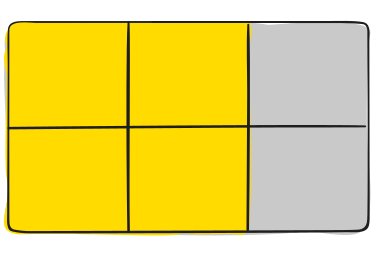
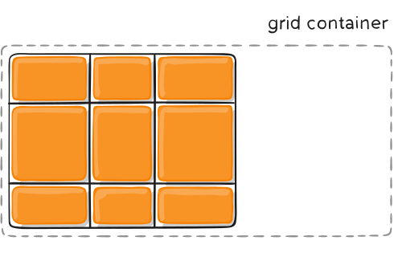
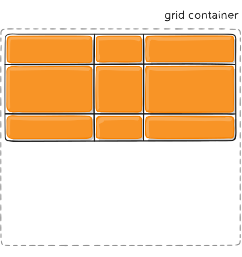
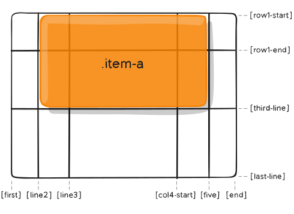

HTML elements are position static by default and not affected by
left, right, bottom, top properties.
position: static; positioned according to the normal flow of the
page.
position: relative; is positioned relative to its normal position.
Other content will not be adjusted to fit into any gap left by the
element.
position: fixed; is positioned relative to the viewport, which means
it always stays in the same place even if the page is scrolled.
position: absolute; is positioned relative to the nearest positioned
ancestor (instead of positioned relative to the viewport, like
fixed). However; if an absolute positioned element has no positioned
ancestors, it uses the document body, and moves along with page
scrolling.
position: sticky; is positioned based on the user's scroll position.
It is positioned relative until a given offset position is met in
the viewport - then it "sticks" in place
By default, position an element based on its current position in the flow. The top, right, bottom,
left and z-index properties do not apply. — source MDN
position: relative
Position an element based on its current position without changing layout.
position: absolute
Position an element based on its closest positioned ancestor position.
The Flexbox Layout (Flexible Box) module (a W3C Candidate
Recommendation as of October 2017) aims at providing a more
efficient way to lay out, align and distribute space among items in
a container, even when their size is unknown and/or dynamic (thus
the word “flex”). The main idea behind the flex layout is to give
the container the ability to alter its items’ width/height (and
order) to best fill the available space (mostly to accommodate to
all kind of display devices and screen sizes). A flex container
expands items to fill available free space or shrinks them to
prevent overflow. Most importantly, the flexbox layout is
direction-agnostic as opposed to the regular layouts (block which is
vertically-based and inline which is horizontally-based). While
those work well for pages, they lack flexibility (no pun intended)
to support large or complex applications (especially when it comes
to orientation changing, resizing, stretching, shrinking, etc.).
Note: Flexbox layout is most appropriate to the components of an
application, and small-scale layouts, while the Grid layout is
intended for larger scale layouts.
This defines the default behavior for how flex items are laid out along the cross axis on the current
line. Think of it as the justify-content version for the cross-axis (perpendicular to the
main-axis).
This defines the default behavior for how flex items are laid out along the cross axis on the current
line. Think of it as the justify-content version for the cross-axis (perpendicular to the
main-axis).
By default, flex items are laid out in the source order. However, the order property controls the
order in which they appear in the flex container.
.item {
order: 5; /* default is 0 */
}
Items with the same order revert to source order.
This defines the ability for a flex item to grow if necessary. It accepts a unitless value that
serves as a proportion. It dictates what amount of the available space inside the flex container the
item should take up.
If all items have flex-grow set to 1, the remaining space in the container will be distributed
equally to all children. If one of the children has a value of 2, the remaining space would take up
twice as much space as the others (or it will try to, at least).
.item {
flex-grow: 4; /* default 0 */
}
Negative numbers are invalid.
This defines the ability for a flex item to shrink if necessary.
.item {
flex-shrink: 3; /* default 1 */
}
Negative numbers are invalid.
This defines the default size of an element before the remaining space is distributed. It can be a
length (e.g. 20%, 5rem, etc.) or a keyword. The auto keyword means “look at my width or height
property” (which was temporarily done by the main-size keyword until deprecated). The content
keyword means “size it based on the item’s content” – this keyword isn’t well supported yet, so it’s
hard to test and harder to know what its brethren max-content, min-content, and fit-content do.
.item {
flex-basis: | auto; /* default auto */
}
If set to 0, the extra space around content isn’t factored in. If set to auto, the extra space is
distributed based on its flex-grow value.
This is the shorthand for flex-grow, flex-shrink and flex-basis combined. The second and third
parameters (flex-shrink and flex-basis) are optional. The default is 0 1 auto, but if you set it
with a single number value, it’s like 1 0.
.item {
flex: none | [ <'flex-grow'> <'flex-shrink'>? || <'flex-basis'> ]
}
It is recommended that you use this shorthand property rather than set the individual properties.
The shorthand sets the other values intelligently.
This allows the default alignment (or the one specified by align-items) to be overridden for
individual flex items.
Please see the align-items explanation to understand the available values.
.item {
align-self: auto | flex-start | flex-end | center | baseline | stretch;
}
Note that float, clear and vertical-align have no effect on a flex item.
Flexbox requires some vendor prefixing to support the most browsers possible. It doesn’t just include
prepending properties with the vendor prefix, but there are actually entirely different property and
value names. This is because the Flexbox spec has changed over time, creating an “old”, “tweener”,
and “new” versions.
Perhaps the best way to handle this is to write in the new (and final) syntax and run your CSS
through Autoprefixer, which handles the fallbacks very well.
Alternatively, here’s a Sass @mixin to help with some of the prefixing, which also gives you an idea
of what kind of things need to be done:
@mixin flexbox() {
display: -webkit-box;
display: -moz-box;
display: -ms-flexbox;
display: -webkit-flex;
display: flex;
}
@mixin flex($values) {
-webkit-box-flex: $values;
-moz-box-flex: $values;
-webkit-flex: $values;
-ms-flex: $values;
flex: $values;
}
@mixin order($val) {
-webkit-box-ordinal-group: $val;
-moz-box-ordinal-group: $val;
-ms-flex-order: $val;
-webkit-order: $val;
order: $val;
}
.wrapper {
@include flexbox();
}
.item {
@include flex(1 200px);
@include order(2);
}
CSS allows animation of HTML elements without using JavaScript or Flash!
To use CSS animation, you must first specify some keyframes for the animation.
To get an animation to work, you must bind the animation to an element.
If the animation-duration property is not specified, no animation will occur.
keywords "from" and "to" represents 0% and 100%.
By using percent in @keyframes, you can add as many style changes as you like.
Use negative values on "animation-delay" to decide at what point the animation will start.
The animation-iteration-count: number of times animations runs. "infinite" is allowed.
animation-direction: normal reverse alternate alternate-reverse.
The animation-fill-mode property specifies a style for the target element when the animation is not
playing (before it starts, after it ends, or both).
animation-fill-mode: none forwards backwards both.
shorthand {animation: animation-name animation-duration animation-timing-function animation-delay
animation-iteration-count animation-direction}
animation-play-state: paused|running|initial|inherit;
animation-timing-function: linear, ease, ease-in, ease-out, ease-in-out
CSS Grid Layout (aka “Grid” or “CSS Grid”), is a two-dimensional grid-based layout
system that,
compared to any web layout system of the past, completely changes the way we design user interfaces.
CSS has always been used to layout our web pages, but it’s never done a very good job of it.
First,
we used tables, then floats, positioning and inline-block, but all of these methods were essentially
hacks and left out a lot of important functionality (vertical centering, for instance). Flexbox
is
also a very great layout tool, but its one-directional flow has different use cases — and they
actually work together quite well! Grid is the very first CSS module created specifically
to
solve
the layout problems we’ve all been hacking our way around for as long as we’ve been
making websites.
To get started you have to define a container element as a grid with display: grid;, set
the column
and row sizes with grid-template-columns and grid-template-rows, and then place its
child elements
into the grid with grid-column and grid-row. Similarly to flexbox, the source
order of the grid
items doesn’t matter. Your CSS can place them in any order, which makes it super easy to
rearrange
your grid with media queries. Imagine defining the layout of your entire page, and
then completely
rearranging it to accommodate a different screen width all with only a couple lines of CSS.
Grid is
one of the most powerful CSS modules ever introduced.
gap A shorthand property for the row-gap and the column-gap properties
grid A shorthand property for the grid-template-rows, grid-template-columns,
grid-template-areas, grid-auto-rows, grid-auto-columns, and the grid-auto-flow properties
grid-area Either specifies a name for the grid item, or this property is a shorthand
property for the grid-row-start, grid-column-start, grid-row-end, and grid-column-end properties
grid-auto-columns Specifies a default column size
grid-auto-flow Specifies how auto-placed items are inserted in the grid
grid-auto-rows Specifies a default row size
grid-column A shorthand property for the grid-column-start and the grid-column-end
properties
grid-column-end Specifies where to end the grid item
grid-column-gap Specifies the size of the gap between columns
The element on which display: grid is applied. It’s the direct parent of all the grid items. In
this example container is the grid container.
<div class="container">
<div class="item item-1"> </div>
<div class="item item-2"> </div>
<div class="item item-3"> </div>
<div>
Grid Item
The children (i.e. direct descendants) of the grid container. Here the item elements are grid
items, but sub-item isn’t. <div class="container">
<div class="item"> </div>
<div class="item">
<p class="sub-item"> </p>
</div>
<div class="item"> </div>
</div>
Grid Line
The dividing lines that make up the structure of the grid. They can be either vertical (“column grid
lines”) or horizontal (“row grid lines”) and reside on either side of a row or column. Here the
yellow line is an example of a column grid line.
The space between two adjacent grid lines. You can think of them as the columns or rows of the grid.
Here’s the grid track between the second and third-row grid lines.
Grid Area
The total space surrounded by four grid lines. A grid area may be composed of any number of grid
cells. Here’s the grid area between row grid lines 1 and 3, and column grid lines 1 and 3.

Grid Cell
The space between two adjacent row and two adjacent column grid lines. It’s a single “unit” of the
grid. Here’s the grid cell between row grid lines 1 and 2, and column grid lines 2 and 3.
Note that a line can have more than one name. .container {
grid-template-rows: [row1-start] 25% [row1-end row2-start] 25% [row2-end];
}
If your definition contains repeating parts, you can use the repeat() notation to streamline things:
.container {
grid-template-columns: repeat(3, 20px [col-start]);
}
If multiple lines share the same name, they can be referenced by their line name and count. .item {
grid-column-start: col-start 2;
}
The fr unit allows you to set the size of a track as a fraction of the free space of the grid
container. .container {
grid-template-columns: 1fr 1fr 1fr;
}
The free space is calculated after any non-flexible items. .container {
grid-template-columns: 1fr 50px 1fr 1fr;
}
Defines a grid template by referencing the names of the grid areas which are specified with the
grid-area property. Repeating the name of a grid area causes the content to span those cells. A
period signifies an empty cell. The syntax itself provides a visualization of the structure of the
grid.
Values:
grid-area-name – the name of a grid area specified with grid-area
" . " – a period signifies an empty grid cell
none – no grid areas are defined .item-a {
grid-area: header;}
.item-b {
grid-area: main;}
.item-c {
grid-area: sidebar;}
.item-d {
grid-area: footer;}
.container {
display: grid;
grid-template-columns: 50px 50px 50px 50px;
grid-template-rows: auto;
grid-template-areas:
"header header header header"
"main main . sidebar"
"footer footer footer footer";}
Each row in your declaration needs to have the same number of cells.
You can use any number of adjacent periods to declare a single empty cell. As long as the periods
have no spaces between them they represent a single cell.
Notice that you’re not naming lines with this syntax, just areas. When you use this syntax the lines
on either end of the areas are actually getting named automatically. If the name of your grid area
is foo, the name of the area’s starting row line and starting column line will be foo-start, and the
name of its last row line and last column line will be foo-end. This means that some lines
might
have multiple names, such as the far left line in the above example, which will have three names:
header-start, main-start, and footer-start.
A shorthand for setting grid-template-rows, grid-template-columns, and grid-template-areas in a
single declaration. .container {
grid-template:
[row1-start] "header header header" 25px [row1-end]
[row2-start] "footer footer footer" 25px [row2-end]
/ auto 50px auto;}
A shorthand for row-gap and column-gap. .container {
grid-template-columns: 100px 50px 100px;
grid-template-rows: 80px auto 80px;
gap: 15px 10px;
}
justify-items
Aligns grid items along the inline (row) axis. This value applies to all grid items inside the
container.
.container {
justify-items: start | end | center | stretch;} This behavior can also be set on individual grid items
via the justify-self property.
align-items
Aligns grid items along the block (column) axis. This value applies to all grid items inside the
container.
.container {
align-items: start | end | center | stretch;}
place items
sets both the align-items and justify-items properties in a single declaration. .center {
display: grid;
place-items: center;}
This property aligns the grid along the inline (row) axis. .container {
justify-content: start | end | center | stretch | space-around | space-between | space-evenly;}

align-content
This property aligns the grid along the block (column) axis. .container {
align-content: start | end | center | stretch | space-around | space-between | space-evenly;}

place-content
place-content sets both the align-content and justify-content properties in a single
declaration.
The first value sets align-content, the second value justify-content.
grid-auto-columns
grid-auto-rows
Specifies the size/width of any auto-generated grid tracks.
Implicit tracks get created when there are more grid items than cells in the grid or when a
grid item is placed outside of the explicit grid. .container {
grid-auto-columns: 60px;}
If you have grid items that you don’t explicitly place on the grid, the auto-placement algorithm
kicks in to automatically place the items. This property controls how the items auto-placement
algorithm
works.
row – tells the auto-placement algorithm to fill in each row in turn, adding new rows
as necessary
(default)
column – tells the auto-placement algorithm to fill in each column in turn, adding new
columns as
necessary
dense – tells the auto-placement algorithm to attempt to fill in holes earlier in the
grid if
smaller items come up later .container {
grid-auto-flow: row | column | row dense | column dense;}
grid
A shorthand for setting all of the following properties in a single declaration:
grid-template-rows grid-template-columns grid-template-areas grid-auto-rows
grid-auto-columns
and grid-auto-flow
The following two code blocks are equivalent: .container {
grid: 100px 300px / 3fr 1fr;}
.container {
grid-template-rows: 100px 300px;
grid-template-columns: 3fr 1fr;}
Equivalent:
.container {
grid: auto-flow / 200px 1fr;}
.container {
grid-auto-flow: row;
grid-template-columns: 200px 1fr;}
Equivalent: .container {
grid: [row1-start] "header header header" 1fr [row1-end]
[row2-start] "footer footer footer" 25px [row2-end]
/ auto 50px auto;}
.container {
grid-template-areas:
"header header header"
"footer footer footer";
grid-template-rows: [row1-start] 1fr [row1-end row2-start] 25px [row2-end];
grid-template-columns: auto 50px auto;}
Determines a grid item’s location within the grid by referring to specific grid lines.
line – can be a number to refer to a numbered grid line, or a name to refer to a named
grid line
span number – the item will span across the provided number of grid tracks
span name – the item will span across until it hits the next line with the provided
name
auto – indicates auto-placement, an automatic span, or a default span of one.
Example: .item-a {
grid-column-start: 2;
grid-column-end: five;
grid-row-start: row1-start;
grid-row-end: 3;}

If no grid-column-end/grid-row-end is declared, the item will span 1 track by default.
Items can overlap each other. You can use z-index to control their stacking order.
grid-column
grid-row
Shorthand for grid-column-start + grid-column-end, and grid-row-start + grid-row-end,
respectively. .item-c {
grid-column: 3 / span 2;
grid-row: third-line / 4;} If no end line value is declared, the item will span 1 track by default.
grid-area
Gives an item a name so that it can be referenced by a template created with the
grid-template-areas property. Alternatively, this property can be used as an even shorter
shorthand
for grid-row-start + grid-column-start + grid-row-end + grid-column-end. .item-d {
grid-area: header;}
Aligns a grid item inside a cell along the inline (row) axis.
This value applies to a grid item inside a single cell. .item {
justify-self: start | end | center | stretch;}
align-self
Aligns a grid item inside a cell along the block (column) axis.
This value applies to the content inside a single grid item. .item {
justify-self: start | end | center | stretch;}
place-self
place-self sets both the align-self and justify-self properties in a single declaration. .item-a {
place-self: center stretch;}
Special Units & Functions
fr units
They essentially mean “portion of the remaining space”.
Work different from % values.
Are much more friendly in combination with other units.
Example: grid-template-columns: 50px min-content 1fr; grid-template-columns: 1fr 3fr;
Sizing Keywords
min-content: the minimum size of the content. Imagine a line of text like “The very long
hotdog.”, the min-content is likely the width of the world “The”.
max-content: the maximum size of the content. Imagine the sentence above, the
max-content is the length of the whole sentence.
auto: this keyword is a lot like fr units, except that they “lose” the fight in sizing
against fr units when allocating the remaining space.
fit-content: use the space available, but never less than min-content and never more
than max-content.
fractional units: see above
The minmax() function sets a minimum and maximum value for what
the length is able to be. This is useful for in combination with relative units. Like you
may want a
column to be only able to shrink so far. grid-template-columns: minmax(100px, 1fr) 3fr;
repeat() Function and Keywords
grid-template-columns:
1fr 1fr 1fr 1fr 1fr 1fr 1fr 1fr;
/* easier: */
grid-template-columns:
repeat(8, 1fr);
/* especially when: */
grid-template-columns:
repeat(8, minmax(10px, 1fr));
auto-fill: Fit as many possible columns as possible on a row, even if they are empty.
auto-fit: Fit whatever columns there are into the space. Prefer expanding columns to
fill space rather than empty columns.
This bears the most famous snippet in all of CSS Grid and one of the all-time great CSS
tricks: grid-template-columns:
repeat(auto-fit, minmax(250px, 1fr));
Masonry
An experimental feature of CSS grid is masonry layout.
The spec has an official way now, and this is behind a flag in Firefox: .container {
display: grid;
grid-template-columns: repeat(4, 1fr);
grid-template-rows: masonry;} Lots of approaches to CSS Mansory layout.
Subgrid
Subgrid is an extremely useful feature of grids that allows grid items to have a grid of their own
that inherits grid lines from the parent grid. .parent-grid {
display: grid;
grid-template-columns: repeat(9, 1fr);}
.grid-item {
grid-column: 2 / 7;
display: grid;
grid-template-columns: subgrid;}
.child-of-grid-item {
/* gets to participate on parent grid! */
grid-column: 3 / 6;}
Media queries can modify the appearance (and even behavior) or a website or app based on
a matched
set of conditions about the user’s device, browser or system settings.
Can be used on HTML, CSS and JS.
the @media rule itself, is one of many CSS at-rules.
Media Types
all: Matches all devices
print: Matches documents that are viewed in a print preview or any media that breaks
the content up into pages intended to print.
screen: Matches devices with a screen
speech: Matches devices that read the content audibly, such as a screenreader. This
replaces the now deprecated aural type since Media Queries Level 4.
Media Features
width Defines the widths of the viewport. This can be a specific number (e.g. 400px) or
a range (using min-width and max-width).
height Defines the height of the viewport. This can be a specific number (e.g. 400px)
or a range (using min-height and max-height).
aspect-ratio Defines the width-to-height aspect ratio of the viewport.
orientation The way the screen is oriented, such as tall (portrait) or wide (landscape)
based on how the device is rotated.
overflow-block Checks how the device treats content that overflows the viewport in the
block direction, which can be scroll (allows scrolling), optional-paged (allows scrolling and manual
page breaks), paged (broken up into pages), and none (not displayed).
overflow-inline Checks if content that overflows the viewport along the inline axis be
scrolled, which is either none (no scrolling) or scroll (allows scrolling).
Do you really need media queries? - CSS
Media queries are a powerful tool in your CSS toolbox with exciting hidden gems. But if you
accomodate your design to every possible situation you’ll end up with a codebase that’s too complex
to maintain and, as we all know, CSS is like a bear cub: cute and inoffensive but when it grows it
will eat you alive. That’s why I recommend following Ranald Mace’s concept of Universal Design
which is “the design of
products to be usable by all people, to the greatest extent possible, without the need for
adaptation or specialized design.” In “Accessibility for Everyone” Laura Kalbag explains that
the difference between accessible and
universal design is subtle but important. An accessible designer would create a large door for
people on a wheel chair to enter, while a universal designer would produce an entry that anyone
would fit disregarding of their abilities. I know that talking about universal design on the
web is hard and almost sound utopian, but think
about it, there are around 150 different browsers, around 50 different combinations of user
preferences, and as we mentioned before more than 24000 different and unique Android devices alone.
This means that there are at least 18 million possible cases in which your content might be
displayed. In the words of the fantastic Miriam Suzanne, “CSS out here trying to do graphic design
of unknown content on an infinite and unknown canvas, across operating systems, interfaces, &
languages. There’s no possible way for any of us to know what we’re doing.” That’s why assuming
is really dangerous, so when you design, develop and think about your products
leave assumptions behind and use media queries to make sure that your content is displayed correctly
in any contact and before any user.
CSS Media Query II
min- and max-
@media (min-width: 30em) and (max-width: 80em) {
body {
background-color: purple;}
Nesting and complex decision making
@media (min-width: 20em), not all and (min-height: 40em) {
@media not all and (pointer: none) { ... }
@media screen and ( (min-width: 50em) and (orientation: landscape) ), print and ( not (color) ) { ... }}
Accessibility
@media screen and (prefers-reduced-motion: reduce) {
* {
/* Very short durations means JavaScript that relies on events still works */
animation-duration: 0.001ms !important;
animation-iteration-count: 1 !important;
transition-duration: 0.001ms !important;}}
@media (inverted-colors) {
img, video {
filter: invert(100%);}}
@media screen and (prefers-color-scheme: light) {
body {
--bg-color: black;
--text-color:white;}
Mobile first - responsive design
responsive design: a process by which a design responds to the size of the viewport
using a combination of a fluid grid, flexible images, and responsive typesetting.
mobile-first, designers and developers start with the small-screen experience first. It
usually uses of min-width.
Brad Frost preached the virtues of content — not devices — determine breakpoints.
It’s possible to avoid using width at all. Modern CSS allow us to create flexible layouts with CSS
grid and flex.
7 habits of highly effective media queries
Let content determine breakpoints
Treat layout as an enhancement
Use major and minor breakpoints
Use relative units
Go beyond width
Use media queries for conditional loading
Don’t go overboard
Start with the small screen first, then expand until it looks like shit. Time for a
breakpoint! –Stephen Hay
Avoid pixel-based media queries. Use ems instead.
Media Features: color, color index, aspect ratio, device aspect ratio, width,
device width, height, device height, orientation, monochrome, resolution, scan, pixel-density and
more.
use media queries for conditional loading
It allows us to prioritize core content and performance while still providing a robust,
fully-featured experience to environments that can handle it.
MatchMedia allows Javascript to capitalize on all the media query goodness. if (window.matchMedia("( min-width: 40em)").matches) {
/* load secondary content */ }
don’t go overboard
introducing a lot of complexity into your designs is going to come back to bite you.
Do as little as possible.
Orientation Media Feature
The orientation media feature tests whether a device is rotated the wide way (landscape) or the tall
way (portrait).
Media queries are unable to know exactly which device is being used
em y rem son unidades flexibles, que dependen del valor establecido de la fuente de nuestro
diseño que es interpretado por el navegador en valores de pixeles.
REM
Dependen directamente del tamaño de fuente del elemento <html>. Permiten escalar el proyecto
en su totalidad con solo cambiar el tamaño el tamaño raíz de la fuente. No se ve afectado por
el font-size de otros elementos.
EM
Depende del último font-size definido dentro del árbol de elementos en el que se encuentra.
Aunque aportan flexibilidad a la maquetación, pueden hacer mas complejo tu código, por tal razón
deben manejarse con cuidado. La ventaja de utilizar em es que permite crear componentes
totalmente modulares, donde con solo cambiar el valor del elemento padre implicaría cambiar los
valores de los elementos hijos.3
Utilizar EM y REM a la vez?
Hay algunos que opinan que es mejor utilizar solo em para diseñar todo de manera modular
aunque los
cálculos sean mas complejos. Otros prefieren la simplicidad de rem donde
todos los cálculos dependen
del mismo valor de font size del elemento raiz. Lo mas optimo es conseguir un
equilibrio utilizando em y rem lo que ayudaría a simplificar los cálculos y haría nuestro código mas
sencillo. la ventaja de utilizar rem es la simpleza que nos permite escalar los
valores en el
proyecto con solo cambiar el valor del font-size en el html de igual manera en los distintos
dispositivos cambiando el valor dentro de los media querys. La ventaja de utilizar
em es de lograr
realizar componente modulares que dependen del valor del elemento padre, con lo que debemos tener
cuidado y realizar correctamente los cálculos para obtener una visualización correcta en la
disposición de los elementos. De esta manera también es recomendable utilizar em y rem a la
vez y
conseguir un equilibrio entre ambos.
Responsive image techniques namely srcset, sizes, and <picture> elements allow the delivery of
different scaled images based on the size and resolution of the accessing device.
WebP formatted images are approximately up to 30% smaller than JPEG and 25% smaller than PNG
formatted images. squoosh and Online-Converter
Choose a CDN
To reduce network latency a CDN stores a version of the content in different geographical locations.
Enable prefetching
There are three main types of prefetching:
Link prefetching enables a browser to gather the resources that a user is likely to
request in the nearest future.
DNS prefetching converts IP addresses into readable website URLs while a user browses a
particular page.
Prerendering is quite similar to prefetching. It also collects the information that a
user might access. The main difference between them is that prerendering renders the entire page and
as soon as a user navigates to it, the current tab will be replaced with a hidden pre-rendered page.
Remove unused CSS and JS
Load a page on Google Chrome, then use a coverage tool (in Dev Tools press Ctrl+Shift+P, type
“Coverage”, press Drawer: Coverage). As soon as the page is reloaded, you can see how much unused
code is there so you can find those modules and lazy load with import ().
Increase the speed with caching
Browser cache. Files are stored in the browser local cache so when one wants to access
them, there is no need to download them from a server.
Cache server. Cache servers are located in different geographic regions so that the
user’s requests don’t have to travel far.
Memory cache. Memory cache helps to speed up the data delivery process within an
application by storing certain parts of data in SRAM.
Disc cache. Like a memory cache, disc cache stores data for it to be accessed faster
within an application though it makes use of conventional RAM.
Optimize the images & videos
IMAGES Optimus aims
at a lightly lossy compression of JPEG images and lossless compression of PNG images. The file size
is reduced by removing the additional data from the image though the image quality is not changed.
MozJPEG can be applied
to resize and compress JPEG and PNG images without a file size limit. It's FREE Guetzli a freely
licensed JPEG encoder developed by Google. The compressor is especially useful to cope with such
drawbacks of JPEG format as solid colors and sharp edges.
VIDEOS HTML5
Video Converter, HandBreak, Converter Point, FreeMake Video Converter
As more and more people use their mobile phones to access the Internet, creating a mobile optimized
website has become a necessity.The first step is to check how your existing website appears on
mobile. You can use Google mobile site tester to find this out. If your website cannot currently be
accessed on mobile, you can create a mobile version of your website for free with the help of
web-based mobile website builders.
Accessible to All Users
A user-friendly website should also be accessible to everyone including blind, disabled or the
elderly. These users typically use screen-readers to access the Internet. The 508 website
accessibility guidelines highlights simple web design techniques that can be applied to make sure
your website can be accessed easily on-screen readers, making your website available to a larger
audience.
Well Planned Information Architecture
How information is organised and presented on your website is vital for good usability. However, it
is often neglected. It has become even more important today as websites offer a wide range of
information and resources to attract their target market. Plan your website sections and categories
carefully and present information in a way that it is easy for users to find. Always think from the
perspective of your users. This is particularly important if you offer a lot of content on your
company's website.
Well-Formatted Content That Is Easy to Scan
The average Internet user skims through the content on a web page instead of reading each and every
word from top to down. Users tend to scan through key parts of the page quickly to determine if it
is relevant to their needs. It is important to format your content with this in mind. Correct
use of headings, sub-headings,
paragraphs, bullets or lists help to break up text, making it easy for readers to scan.
Fast Load Times
Nothing is more annoying for website visitors than a website that takes long to load. In fact, slow
speed is one of the main reasons why visitors leave a website. Making sure your website loads within
4 to 6 seconds is important for good usability. It also affects your search engine ranking. You can
use free tool such as Pingdom to test the speed of your website and to get suggestion on what you
can do to improve your speed.
Browser Consistency
Browser compatibility can be easily overlooked. Even the websites of some of the most reputable
companies suffer from this problem due to neglect. This is bad for branding and has a negative
affect on website usability.
Good navigation is one of the most important aspects of website usability. Simple HTML or JavaScript
menus tend to work best and appear consistent on all browsers and platforms. It is equally important
for the navigation to be clutter-free. Try to limit the number of menu items as far as possible. A
drop-down menu or sub-navigation may work better on large site with many sections and pages.
Good Error Handling
Good error handling and description on-screen messages are very important for good usability. However
it is often overlooked. Correct handling of errors at a code level ensures the website is robust and
free from bugs. Displaying the right error message improves the user experience and overall
usability.
Valid Mark-Up & Clean Code
A website that adheres to the relevant web design best practices and standards is often more robust
and dependable. It also ensures the website will load faster and appear consistent across browsers
and devices. It also makes it easier to locate problems and troubleshoot if the need arises.
More information and mark-up validation tools can be found on W3C's website.
Contrasting Colour Scheme
The right contrast between the background of the website and content is one of the most basic yet
most important web design principles that should never be overlooked. Good contrast between
background and text e.g. black text on a white background makes your content legible and easy to
read. Lack of contrast, on the other hand, makes it very difficult for visitors to read your
content.
Usable Forms
Forms are a very important element on business websites. They allow users to interact with the site.
Forms are also very useful for generating leads for a business.
To get the most out of your site, it is important to ensure the forms are easy to use and accessible
to everyone.
Here are some tips:
Use correct labels for all fields
Follow good form design principles
Try to keep the number of fields to a minimum
Offer tooltips and suggestions
Display on-screen message on completion
Use correct validation
One of the most powerful subliminal visual tools is the deliberate use of color to influence the user
experience on a website. Reds are “hot” colors and command attention. Blues and greens are “cool”
colors and have a calming effect. Think carefully about the colors you choose for your background,
headers, navigation and links. Test different colors methodically to determine the most effective
palette for your audience and message.
Images
A picture tells a thousand words. But the wrong picture is a waste of precious real estate. Whether
you use photography, diagrams or illustrations, be sure to select imagery that will be appealing to
your audience and is also relevant and truly adds value to your message.
Textual Content
Unlike a slick magazine print campaign, a website needs to be populated with relevant, keyword-rich
content. Use headings and subheadings (H1s, H2s, H3s, etc.) to organize the text and allow easy
visual scanning. Use bold face and anchor text (intrasite links) to communicate important concepts.
If your subject matter is complex, provide a glossary and link key terms to it frequently, so you
don’t have to define concepts repeatedly on a page.
Navigation
Make it easy for visitors to find what they are looking for. Give them multiple vehicles for
accessing information. Provide a Search function, side navigation categories, footer navigation text
links, top navigation buttons or tabs, whatever will make it utterly seamless for a user to move
around your site, no matter where they start. Remember a website is not a linear thing. A new site
visitor may land first on your home page, or on a product page buried deep within your site.
Alignment
Elements of your site should be visually connected and balanced. Stick to a limited number of page
treatments; fewer if your site is small, more for larger sites comprised of multiple content types.
A page that is frenetic and chaotic will have a much higher bounce rate. A page with a clarity of
message, cleanly aligned visual elements and a clear call to action will have a higher conversion
rate.
Consistency & Continuity
Be consistent throughout your site so that a visitor navigating from page to page will always know
where they are and how to get to the next item of interest. Continuity is one of the single most
important elements in conversion. When a user clicks to navigate to a new page, that page must match
their expectations and deliver a consistent, continuous message.
White Space
White space is an often undervalued commodity. But it’s a concept used throughout design and
aesthetics. Think of it as breathing room. It’s like listening instead of always talking. It’s a
welcome break in a busy day. It will allow your visitors to focus on what’s important. If every
pixel is vying for your visitors’ attention, you will never get your key message across.
/*
##Device = Desktops
##Screen = 1281px to higher resolution desktops */
@media (min-width: 1281px) {
/* CSS */ }
/*
##Device = Laptops, Desktops
##Screen = B/w 1025px to 1280px */
@media (min-width: 1025px) and (max-width: 1280px) {
/* CSS */}
/*
##Device = Tablets, Ipads (portrait)
##Screen = B/w 768px to 1024px */
@media (min-width: 768px) and (max-width: 1024px) {
/* CSS */ }
/*
##Device = Tablets, Ipads (landscape)
##Screen = B/w 768px to 1024px */
@media (min-width: 768px) and (max-width: 1024px) and (orientation: landscape) {
/* CSS */ }
/*
##Device = Low Resolution Tablets, Mobiles (Landscape)
##Screen = B/w 481px to 767px */
@media (min-width: 481px) and (max-width: 767px) {
/* CSS */ }
/*
##Device = Most of the Smartphones Mobiles (Portrait)
##Screen = B/w 320px to 479px */
@media (min-width: 320px) and (max-width: 480px) {
/* CSS */ }
Motivational Stuff I
The great DevEd
Motivational Stuff II
The one, Traversy
Bootstrap 4 - Getting started I
What is Bootstrap?
Bootstrap is a free front-end framework for faster and easier web development
Bootstrap includes HTML and CSS based design templates for typography, forms, buttons, tables,
navigation, modals, image carousels and many other, as well as optional JavaScript plugins
Bootstrap also gives you the ability to easily create responsive designs
The main differences between Bootstrap 5 and Bootstrap 3 & 4, is that Bootstrap 5 has switched
to JavaScript instead of jQuery.
Why use Bootstrap?
Easy to use: Anybody with just basic knowledge of HTML and CSS can start using Bootstrap
Responsive features: Bootstrap's responsive CSS adjusts to phones, tablets, and
desktops
Mobile-first approach: In Bootstrap, mobile-first styles are part of the core framework
Browser compatibility: Bootstrap 4 is compatible with all modern browsers (Chrome,
Firefox, Internet Explorer 10+, Edge, Safari, and Opera)
Bootstrap 4 also requires a containing element to wrap site contents.
There are two container classes to choose from:
The .container class provides a responsive fixed width container
The .container-fluid class provides a full width container, spanning the entire width
of the viewport
You can also use the .container-sm|md|lg|xl classes to create responsive containers.
Bootstrap's grid system is built with flexbox and allows up to 12 columns across the
page.
You can group the columns together to create wider columns
span 1 span 2.. span 12
The grid system is responsive, and the columns will re-arrange automatically depending on the screen
size.
Make sure that the sum adds up to 12 or fewer (it is not required that you use all 12 available
columns).
The Bootstrap 4 grid system has five classes:
.col- (extra small devices - screen width less than 576px)
.col-sm- (small devices - screen width equal to or greater than 576px)
.col-md- (medium devices - screen width equal to or greater than 768px)
.col-lg- (large devices - screen width equal to or greater than 992px)
.col-xl- (xlarge devices - screen width equal to or greater than 1200px)
The classes above can be combined to create more dynamic and flexible layouts.
Bootstrap 4 - Grid System II
Rows and Columns
create a row (<div class="row">)
add the desired number of columns. Ex: "col-sm-3"
Or add class="col" to each <div> inside the <div class="row"> to make them equaly proportional.
Default settings
Bootstrap 4 uses a default font-size of 16px, and its line-height is 1.5.
The default font-family is "Helvetica Neue", Helvetica, Arial, sans-serif.
In addition, all <p> elements have margin-top: 0 and margin-bottom: 1rem (16px by default).
Display headings are used to stand out more than normal headings (larger font-size and
lighter
font-weight), and there are four classes to choose from: .display-1 .display-2 .display-3
.display-4
The HTML <small> element is used to create a lighter, secondary text in any heading